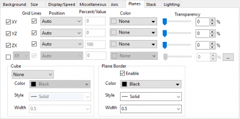
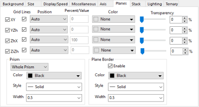
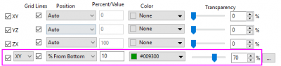
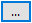
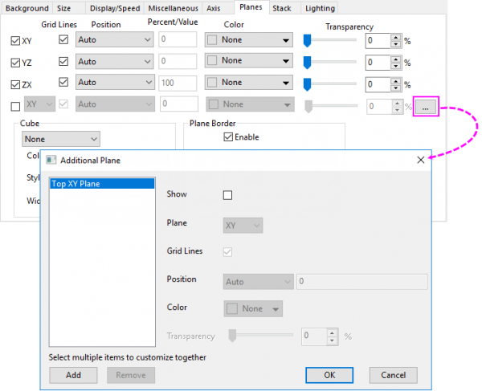
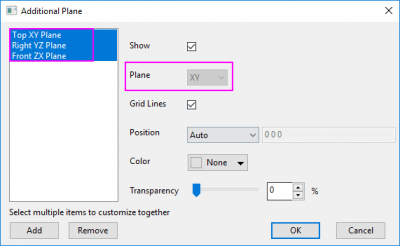
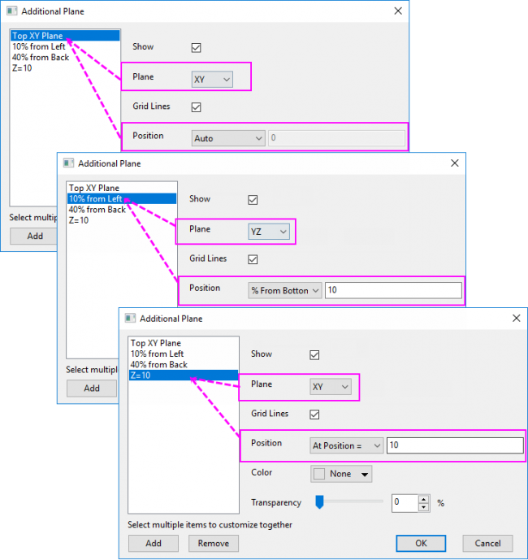
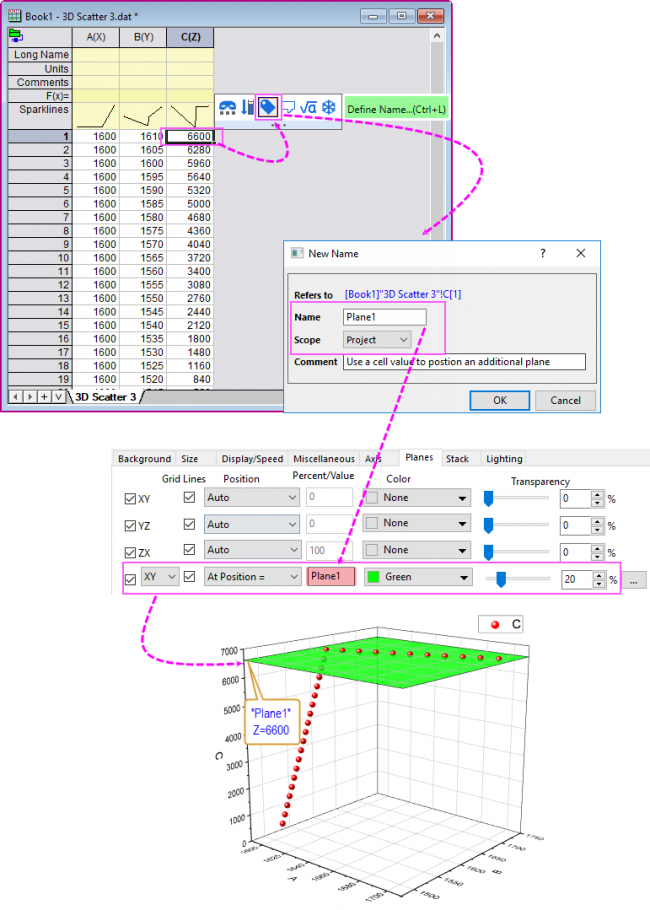
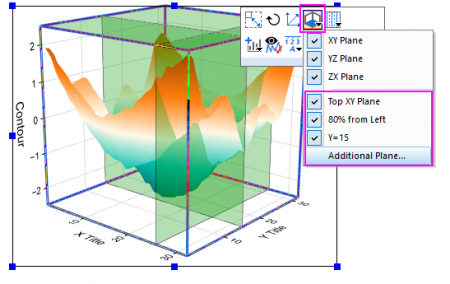

Die Registerkarte Ebenen (Details Zeichnung)
PD-Dialog-Plane-Tab
In einem 3D-Diagramm im kartesischen Koordinatensystem können Sie die Position und Anzeige der Ebenen XY, YZ, ZX und mehrere zusätzliche Ebenen festlegen (einschließlich der vorderen Ebenen Ihrer 3D-Diagramme).
Um die Anzeige der 3D-Ebenen zu steuern, bearbeiten Sie die Registerkarte Ebenen des Dialogs Details Zeichnung.
Beachten Sie, dass diese Registerkarte auch auf der Layerebene in 2D-Wasserfalldiagrammen verfügbar ist. Die Steuerung ist jedoch auf die Ebenen XY, YZ und ZX begrenzt. In einem ternären 3D-Oberflächendiagramm mit Farbabbildung, einem tetraedrischen 3D-Diagramm und einem ternären 3D-Symboldiagramm können Sie auch vier Ebenen steuern, die als XY, YZh, ZhX und ZiZh bezeichnet werden.
|  |
 |
| Registerkarte Ebenen für allgemeine 3D-Diagramme |
Registerkarte Ebenen für ternäre/tertraedrische 3D-Diagramme |
Gitternetzlinien
Diese Kontrollkästchen steuern, ob Gitternetzlinien in der entsprechenden Ebene angezeigt werden.
Position
Dieses Kontrollkästchen wird verwendet, um automatisch die hintere Ebene neu anzuzeigen, wenn das Diagramm gedreht wird, so dass eine der Ebenen nach vorn versetzt wird.
Es gibt drei Auswahlmöglichkeiten, um die Position der Ebene festzulegen.
| Auto |
Die ursprüngliche Position der Ebene wird beibehalten. |
| % von unten |
Der Wert im Textfeld % von unten regelt die Position der entsprechenden Ebene vom Anfang ihrer orthogonalen Achse als Prozentsatz der Achsenlänge. |
| An Position = |
Legen Sie die Position der Ebene fest. |
Prozent/Wert
Geben Sie einen Wert für Prozent ein, während % von unten in der Auswahlliste Position ausgewählt ist.
Geben Sie einen Positionswert ein, während Bei Position = in der Auswahlliste Position ausgewählt ist.
Farbe
Das Textfeld Farben bestimmt die zugehörige Farbe der Ebene.
Transparenz
Legen Sie die Transparenz der Ebenenfarbe fest.
Zusätzliche Ebene
Bei allgemeinen 3D-Diagrammen können Sie zusätzlich zu den Ebenen der XY/YZ/ZX-Koordinaten, die standardmäßig angezeigt werden, weitere Ebenen hinzufügen.
Wenn Sie nur eine zusätzliche Ebene hinzufügen wollen, können Sie das Kontrollkästchen vor der letzten Ebene aktivieren und dann die Anzeige und Position der Ebene festlegen.
- 
Wenn Sie mehr als eine Ebene hinzufügen möchten, können Sie auf die Schaltfläche  nach der letzten Ebene klicken, um den Dialog Zusätzliche Ebene zu öffnen. Mit diesem Dialog können Sie mehrere Ebenen in verschiedenen Richtungen hinzufügen.
- 
:
Standardmäßig wird eine "obere XY-Ebene" im linken Bedienfeld gezeigt. Sie können auf die Schaltfläche Hinzufügen klicken, um mehr Ebenen hinzuzufügen. Um eine Ebene zu entfernen, können Sie die Ebene auswählen und auf die Schaltfläche Entfernen klicken.
Um mehrere Ebenen zusammen benutzerdefiniert anzupassen, können Sie auf die rechte Maustaste drücken und an ihr ziehen, um mehrere Ebenen auszuwählen, und dann Einstellungen für sie zusammen im rechten Bedienfeld vornehmen.
:
Aktivieren oder deaktivieren Sie das Kontrollkästchen Zeigen, um zu entscheiden, ob diese Ebene gezeigt werden soll. Nur wenn das Kontrollkästchen Zeigen aktiviert ist, sind die folgenden Bedienelemente für Anzeige und Position verfügbar.
:
Wählen Sie XY, YZ bzw. ZX in der Auswahlliste aus, um die Richtung der Ebene festzulegen. Bitte beachten Sie, dass die Auswahlliste Ebene nicht verfügbar ist, wenn die Richtungen der ausgewählten Ebenen im linken Bedienfeld unterschiedlich sind.
- 
:
Aktivieren oder deaktivieren Sie die Gitternetzlinien, um zu entscheiden, ob die Gitternetzlinien auf der Ebene gezeigt werden. Der Stil der Gitternetzlinien auf der zusätzlichen Ebene entspricht dem der zugehörigen Koordinatenebene.
:
Sie können das Kombinationsfeld Position verwenden, um die Position der Ebene(n) festzulegen.
Es gibt drei Möglichkeiten, um die Position der Ebene festzulegen:
- Auto: Es werden nur die obere XY-, rechte YZ oder vordere ZX-Ebene gezeigt.
- % von unten: Die Position der Ebene, die sich auf unten/links/hinten ihrer orthogonalen Achse bezieht, wird als Prozentsatz der Achsenlänge festgelegt.
- Bei Position: Legen Sie die Position der Ebene direkt nach Achsenwert fest.
Wenn Sie Position auf Bei Position = oder % von unten ausgewählt haben, zeigt der Name der Ebenen die Positionsinformationen direkt an.

Wenn Sie mehrere Ebenen im linken Bedienfeld ausgewählt und Position auf Bei Position = oder % von unten gesetzt haben, können Sie die Positionswerte mit Leerzeichen direkt in das folgende Feld eingeben, um die Positionen zusammen festzulegen.
Hinweis: Wenn Sie einen Zellenwert verwenden möchten, um die zusätzliche Ebene zu definieren, sollten Sie zuerst einen benannten Bereich definieren und dann diesen Bereich verwenden, um die Position der Ebene festzulegen.

|
:
Verwenden Sie das Bedienelement Farbe, um die Farbe für die Ebene(n) anzugeben, und das Bedienelement Transparenz, um die Transparenz der Ebene zu ändern.
Hinweis:
- Wenn Sie auf OK geklickt haben, um den Dialog Zusätzliche Ebene zu schließen, wird die zuletzt bearbeitete Ebene unter den Koordinatenebenen gezeigt. Um die anderen Ebenen weiter benutzerdefiniert anzupassen, sollten Sie den Dialog Zusätzliche Ebene erneut öffnen.
- All diese von Ihnen festgelegten Ebenen können in der Grafik nur gezeigt werden, wenn Sie auf OK im Dialog Zusätzliche Ebene und Übernehmen oder OK im Dialog Details Zeichnung geklickt haben.
- Der Dialog Zusätzliche Ebene kann auch über die Schaltfläche
_Planes_Tab/Popup_Plane.png) auf der Minisymbolleiste für 3D-Diagramme geöffnet werden. Außerdem werden alle zusätzlichen Ebenen unter dieser Auswahlliste aufgeführt. Sie können Sie zeigen oder verbergen, indem Sie das jeweilige Element aktivieren bzw. deaktivieren. auf der Minisymbolleiste für 3D-Diagramme geöffnet werden. Außerdem werden alle zusätzlichen Ebenen unter dieser Auswahlliste aufgeführt. Sie können Sie zeigen oder verbergen, indem Sie das jeweilige Element aktivieren bzw. deaktivieren.
- 
|
Würfel
Hinweis: Diese Gruppe wird als Prisma bezeichnet, wenn die Zeichnung im ternären 3D-Koordinatensystem erstellt worden ist.
Vordere Ecke
Legen Sie die Farbe, den Stil und die Breite der vorderen Ecke fest.
Gesamter Würfel/gesamtes Prisma
Legen Sie die Farbe, den Stil und die Breite des gesamten Würfels/Prismas fest.
Ebenengrenze
Aktivieren Sie das Kontrollkästchen Aktivieren, um die Farbe, den Stil und die Breite der Ebenengrenze anzupassen.